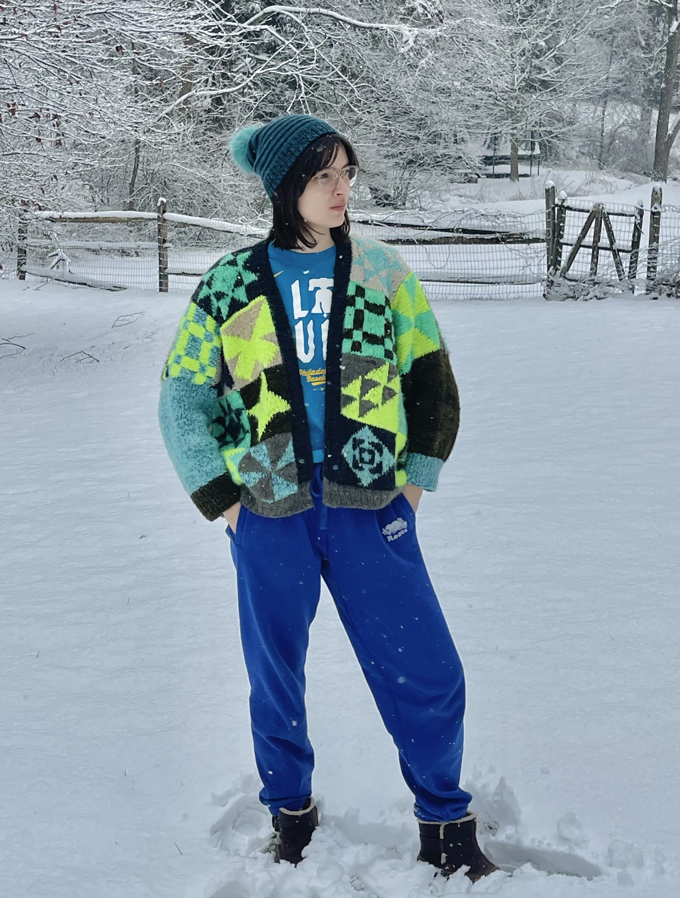
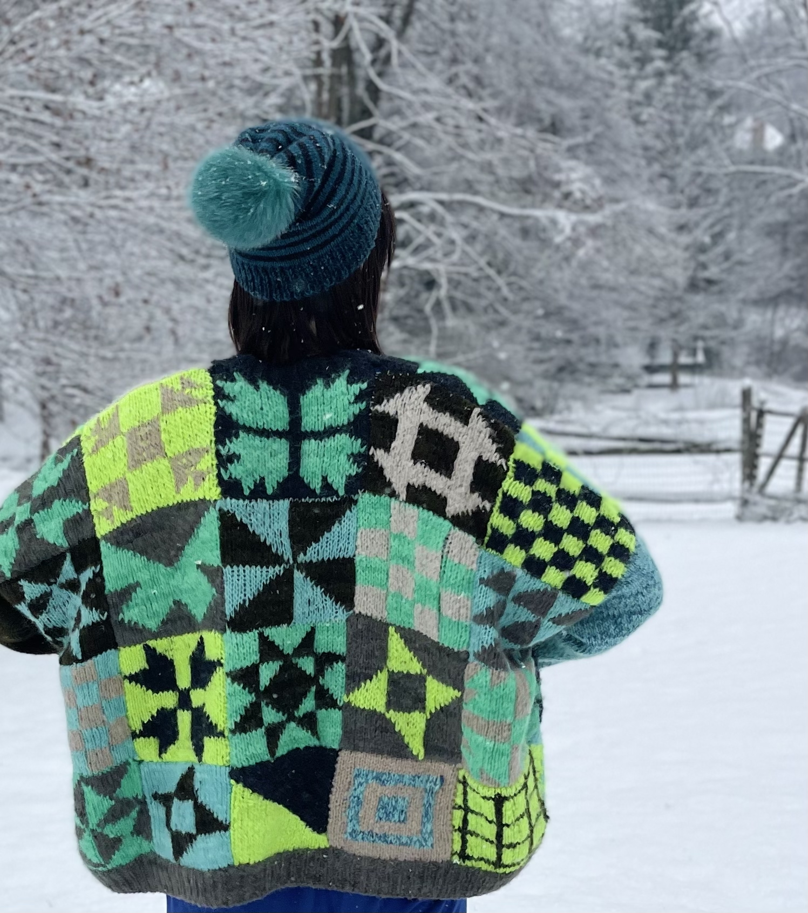

Bold knitwear, designed and made by hand.
Graphic sweaters inspired by quilt squares and color theory. Email-only ordering for available pieces and commissions.
Tip: include your typical T-shirt size and shipping city/country in your email.
Cardigans
I work on a small number of pieces at a time. If you’d like to claim an available sweater or join the waitlist for an upcoming one, email me—first come, first served.
Quilt-Square Cardigan — Neon / Cool Palette




How the sweaters are made
Process is part of the value: materials, design planning, and careful finishing. Here’s what goes into a patchwork cardigan.
1) Materials (soft, fluffy, lightweight)
I knit with an exceptionally soft alpaca–silk blend chosen for comfort and color. It’s gentle on the skin (non-itchy), and it creates a fabric that’s fluffy and warm without feeling heavy. The yarn comes in a wide selection of vibrant hand-dyed shades, which makes it possible to build palettes that are graphic, nuanced, and unique.
2) Patchwork design (quilt-square inspired)
Each sweater is built square by square. Color placement is planned to balance contrast, rhythm, and visual weight—so the final piece feels bold but intentional. Because the sweater is assembled from individually knit blocks, no two pieces are ever exactly the same.
3) Fit & sizing
The cardigan is designed as an oversized, relaxed fit that works across a wide range of bodies. For commissions, you can share your typical T-shirt size and I’ll confirm proportions so it fits with the intended drape. Sleeve and body length can be adjusted if you have preferences.
Commissions
I accept a limited number of commissions at a time so I can keep the work careful and consistent.
Custom Patchwork Cardigan — $500
- One-of-a-kind quilt-square colorwork design
- Oversized fit by default, with adjustable proportions
- Palette chosen collaboratively
- Timeline confirmed before you commit
I’ll reply with fit notes, timing, and next steps.
Contact
Email is the easiest way to reach me: egrhodes96@gmail.com
Include your typical T-shirt size and shipping city/country for the fastest response.